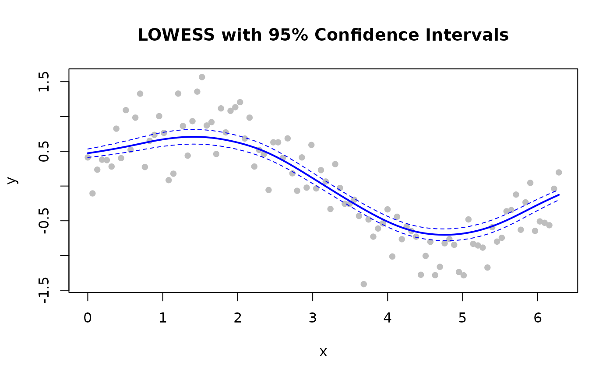
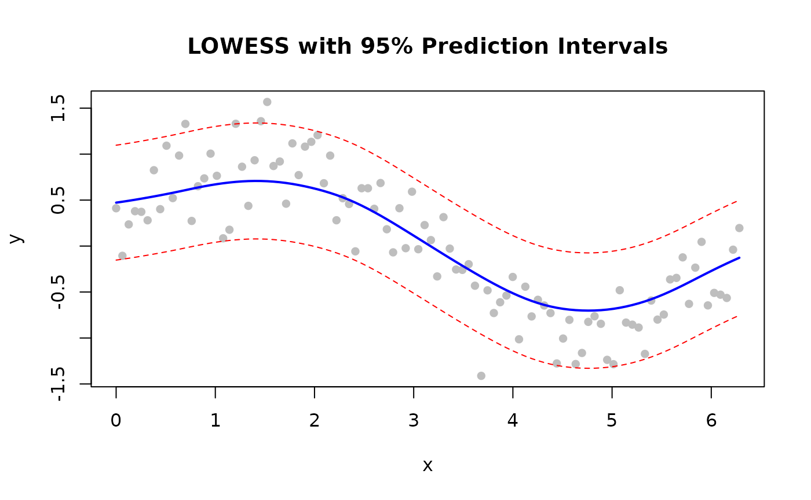
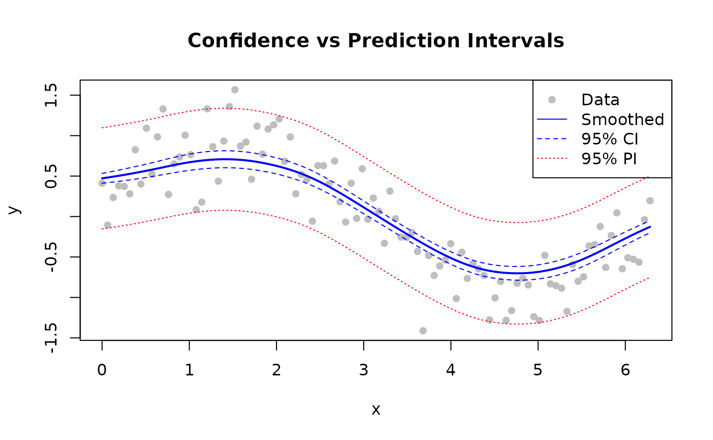

Overview

Confidence and prediction intervals
Note: Confidence and prediction intervals are available in Batch mode only. Streaming and Online modes do not support intervals.
| Type | Represents | Width | Use |
|---|---|---|---|
| Confidence | Mean curve uncertainty | Narrow | Where is the true trend? |
| Prediction | New-point uncertainty | Wide | Where will new data fall? |
Confidence Intervals
Estimate uncertainty in the smoothed curve itself.
library(rfastlowess)
set.seed(42)
x <- seq(0, 2 * pi, length.out = 100)
y <- sin(x) + rnorm(100, sd = 0.3)
model <- Lowess(fraction = 0.5, confidence_intervals = 0.95)
result <- fit(model, x, y)
# Plot with bands
plot(x, y, pch = 16, col = "gray",
main = "LOWESS with 95% Confidence Intervals")
lines(result$x, result$y, col = "blue", lwd = 2)
lines(result$x, result$confidence_lower, col = "blue", lty = 2)
lines(result$x, result$confidence_upper, col = "blue", lty = 2)
Prediction Intervals
Wider than confidence intervals — cover where new observations will fall.
library(rfastlowess)
set.seed(42)
x <- seq(0, 2 * pi, length.out = 100)
y <- sin(x) + rnorm(100, sd = 0.3)
model <- Lowess(fraction = 0.5, prediction_intervals = 0.95)
result <- fit(model, x, y)
plot(x, y, pch = 16, col = "gray",
main = "LOWESS with 95% Prediction Intervals")
lines(result$x, result$y, col = "blue", lwd = 2)
lines(result$x, result$prediction_lower, col = "red", lty = 2)
lines(result$x, result$prediction_upper, col = "red", lty = 2)
Both Intervals Together
library(rfastlowess)
set.seed(42)
x <- seq(0, 2 * pi, length.out = 100)
y <- sin(x) + rnorm(100, sd = 0.3)
model <- Lowess(
fraction = 0.5,
confidence_intervals = 0.95,
prediction_intervals = 0.95
)
result <- fit(model, x, y)
plot(x, y, pch = 16, col = "gray",
main = "Confidence vs Prediction Intervals")
lines(result$x, result$y, col = "blue", lwd = 2)
# Confidence interval (narrow, blue)
lines(result$x, result$confidence_lower, col = "blue", lty = 2)
lines(result$x, result$confidence_upper, col = "blue", lty = 2)
# Prediction interval (wide, red)
lines(result$x, result$prediction_lower, col = "red", lty = 3)
lines(result$x, result$prediction_upper, col = "red", lty = 3)
legend("topright",
c("Data", "Smoothed", "95% CI", "95% PI"),
pch = c(16, NA, NA, NA), lty = c(NA, 1, 2, 3),
col = c("gray", "blue", "blue", "red"))
Choosing a Coverage Level
Pass any value between 0 and 1 (exclusive). Common choices:
| Level | z-value | Interpretation |
|---|---|---|
| 0.90 | 1.645 | 90% of intervals contain true value |
| 0.95 | 1.960 | 95% of intervals contain true value |
| 0.99 | 2.576 | 99% of intervals contain true value |
# 99% confidence intervals
model <- Lowess(fraction = 0.5, confidence_intervals = 0.99)
result <- fit(model, x, y)
cat("First 6 smoothed values (99% CI):\n")
#> First 6 smoothed values (99% CI):
print(head(result$y))
#> [1] 0.4722882 0.4822189 0.4927151 0.5037882 0.5153461 0.5273328
sessionInfo()
#> R version 4.6.1 (2026-06-24)
#> Platform: x86_64-pc-linux-gnu
#> Running under: Ubuntu 24.04.4 LTS
#>
#> Matrix products: default
#> BLAS: /usr/lib/x86_64-linux-gnu/openblas-pthread/libblas.so.3
#> LAPACK: /usr/lib/x86_64-linux-gnu/openblas-pthread/libopenblasp-r0.3.26.so; LAPACK version 3.12.0
#>
#> locale:
#> [1] LC_CTYPE=C.UTF-8 LC_NUMERIC=C LC_TIME=C.UTF-8
#> [4] LC_COLLATE=C.UTF-8 LC_MONETARY=C.UTF-8 LC_MESSAGES=C.UTF-8
#> [7] LC_PAPER=C.UTF-8 LC_NAME=C LC_ADDRESS=C
#> [10] LC_TELEPHONE=C LC_MEASUREMENT=C.UTF-8 LC_IDENTIFICATION=C
#>
#> time zone: UTC
#> tzcode source: system (glibc)
#>
#> attached base packages:
#> [1] stats graphics grDevices utils datasets methods base
#>
#> other attached packages:
#> [1] rfastlowess_3.0.0 BiocStyle_2.40.0
#>
#> loaded via a namespace (and not attached):
#> [1] cli_3.6.6 knitr_1.51 rlang_1.3.0
#> [4] xfun_0.60 otel_0.2.0 generics_0.1.4
#> [7] textshaping_1.0.5 jsonlite_2.0.0 htmltools_0.5.9
#> [10] ragg_1.5.2 sass_0.4.10 rmarkdown_2.31
#> [13] evaluate_1.0.5 jquerylib_0.1.4 fastmap_1.2.0
#> [16] yaml_2.3.12 lifecycle_1.0.5 bookdown_0.47
#> [19] BiocManager_1.30.27 compiler_4.6.1 fs_2.1.0
#> [22] htmlwidgets_1.6.4 systemfonts_1.3.2 digest_0.6.39
#> [25] R6_2.6.1 bslib_0.12.0 tools_4.6.1
#> [28] BiocGenerics_0.58.1 pkgdown_2.2.1 cachem_1.1.0
#> [31] desc_1.4.3